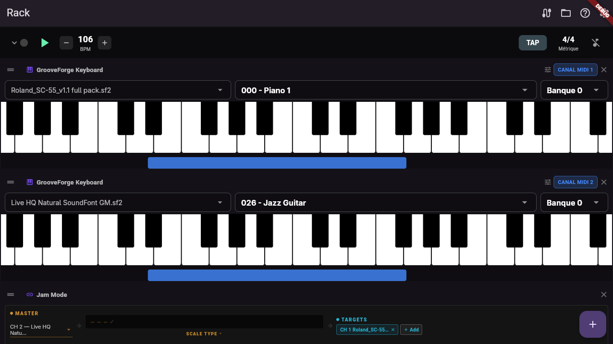

.gfdrum patterns
Declarative YAML drum patterns for the Drum Generator: step grids, humanisation, and song structure.

What a pattern file contains
Each .gfdrum file is human-readable YAML (comments encouraged). Top-level fields describe the groove
musically and drive the scheduler:
name,family— display and grouping.bpm_range— suggested tempo window[min, max].time_signature— e.g.[4, 4]or[3, 4]; loading a pattern can align the transport.resolution— steps per bar (e.g. 16 for sixteenth notes in 4/4; 9 for triplet grids in 3/4).feel—straight,swing_soft,swing_hard, orlaid_back(micro-timing of odd steps).
Step grid notation
Each character is one step for that instrument’s lane:
| Char | Meaning |
|---|---|
X | Strong accent (full velocity multiplier) |
x | Medium accent |
o | Soft hit |
g | Ghost note (very low velocity) |
. | Rest |
Instruments block
Under instruments:, each lane maps to a GM drum note number plus base_velocity,
velocity_range, timing_jitter, and duration_beats. Lane names are yours
(kick, snare, hihat, surdo_open, …) as long as each used lane is defined.
Sections
Typical keys under sections::
introwithtype: count_in,hits, andnotefor stick clicks or hats.groove— either a single-bar loop withbars: 1andvariations:(weighted random), ortype: sequencewithbars: Nandbar_grids:for multi-bar phrases that repeat.fill,break,crash— one-shot sections with their own variations.
Structure block
structure: configures arrangement logic, for example fill_every, break_every,
break_length, crash_after_fill, and dynamic_build for progressive arrangement.
Humanisation
humanization: applies global timing and velocity variance (timing_jitter, velocity_jitter,
velocity_drift) so repeats are not machine-perfect.
Download bundled patterns (from main)
These links point at raw.githubusercontent.com so you always get the latest committed file from the
default branch — ideal as references when authoring your own patterns.
| Pattern | Download |
|---|---|
| Afrobeat | afrobeat.gfdrum |
| Batucada | batucada.gfdrum |
| Batucada (directed) | batucada_directed.gfdrum |
| Breton An Dro | celtic_breton_an_dro.gfdrum |
| Irish Jig | celtic_irish_jig.gfdrum |
| Plinn | celtic_plinn.gfdrum |
| Celtic Reel | celtic_reel.gfdrum |
| Scottish Reel | celtic_scottish_reel.gfdrum |
| Country | country.gfdrum |
| Disco | disco.gfdrum |
| Fanfare march | fanfare_march.gfdrum |
| Festive fanfare | festive_fanfare.gfdrum |
| Funk (tight) | funk_tight.gfdrum |
| Jazz half-time shuffle | jazz_halftime_shuffle.gfdrum |
| Jazz swing | jazz_swing.gfdrum |
| Jazz waltz | jazz_waltz.gfdrum |
| Bossa Nova | latin_bossa_nova.gfdrum |
| Cha-cha | latin_cha_cha.gfdrum |
| Salsa | latin_salsa.gfdrum |
| Metal | metal.gfdrum |
| Classic rock | rock_basic.gfdrum |
| Samba groove | samba_groove.gfdrum |
| Second line | second_line.gfdrum |
After downloading, open the Drum Generator in GrooveForge and load the file from storage (same workflow as SoundFonts). Start from a file whose style is closest to yours — the comments inside each pattern explain bar maps and musical intent.